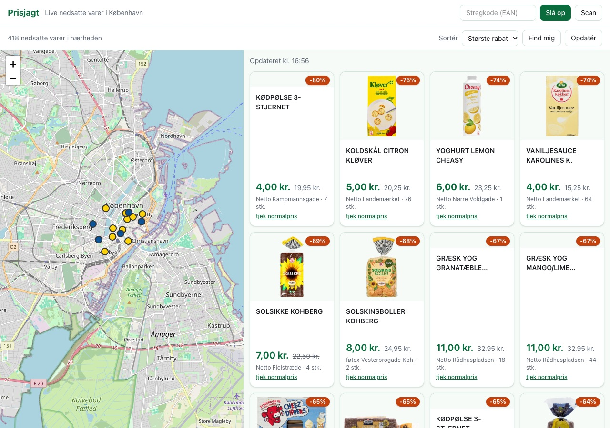
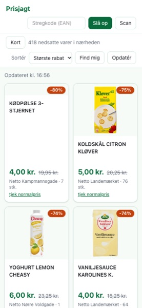

What it looks like
Screenshots from the app running against the live Salling Group API on 10 October 2026. Everything shown is real: real products, real markdowns, real stores.


How it works
- No framework, no build at deploy, no backend. One HTML file, one JavaScript file, and two vendored stylesheets. Leaflet and a pre-generated Tailwind build are committed, so nothing is fetched from a CDN at runtime.
- One request fills the screen. The bulk clearance endpoint returns 16 stores and 418 offers in a single call — fetching store by store would be 16 calls.
- Aggressive caching. Offers are cached 30 minutes and served stale while revalidating, store locations 24 hours, barcode lookups 7 days. Only the fields the interface renders are stored: 311 bytes per offer instead of 607.
- Paced requests. The API blocks by IP address after a short burst, so every call goes through one queue, one at a time.
- Your own API key. Nothing is shared, nothing is collected, there is no server to collect it.
Running it yourself
- Get a free API key at developer.sallinggroup.dev, with access to Anti Food Waste and Stores (Products EAN too, if you want barcode lookups).
- Clone the repository and start the development server:
git clone https://github.com/diogomonte/prisjagt cd prisjagt python3 dev-server.py - Open
http://localhost:8000and paste your key. It is stored in your browser and sent only to Salling Group.
dev-server.py is a
small local proxy. It forwards API calls and adds the cross-origin headers a browser needs —
which is exactly what cannot be done on a static host, and the subject of the next section.
Why this isn't just hosted somewhere
This page sits at the URL where the app itself was meant to live. The app was deployed here, loaded correctly, and then could not read a single API response. The cause is a quirk worth documenting, because it is invisible until you hit it.
Salling Group returns the Access-Control-Allow-Origin
header only for origins registered on your API credential. The twist:
| Same request, from a public origin | CORS header? |
|---|---|
with a valid key → 200 OK |
absent |
with no key → 401 |
present |
So the browser can read every failure and no success. The request reaches the API, the API
answers it, and Chrome discards the response —
net::ERR_FAILED 200 (OK).
The fix would be to register the site's origin on the credential. Salling's documentation describes front-end integrations and their portal contains exactly that field — but the credential type available when creating a key exposes no way to set it. This affects any visitor's key, not just one, so a hosted copy cannot work for anybody. It is a constraint of the data provider, not a defect in the app: run it locally and everything above works.
Built specification-first
Every feature here was written down before it was written. The project uses OpenSpec, where a change moves through four artifacts before any code is touched:
proposal.md why this change exists, and what it is NOT
|
v
spec.md what the system must do - requirements and
| testable scenarios, no implementation detail
v
design.md how, and why that way: decisions, rejected
| alternatives, risks
v
tasks.md ordered steps, each stating how to verify it
|
v
codeFive changes, 31 requirements and 95 tracked tasks produced the app above — plus roughly 250 automated assertions, covering cache behaviour, request pacing, layout geometry and the deployment pipeline.
What writing it down first actually caught
The interesting part is not the process diagram — it is the specific errors that became visible because a plan existed to contradict:
- A cache that would have lied about prices. Prices differ per store. The first implementation keyed the cache on barcode alone, so one shop's price could be served for another. A spec scenario — "the system never shows one store's price as another store's price" — turned that into a failing test instead of a bug report.
-
A design decision that was simply wrong. The design
declared store-specific pricing a non-goal, asserting the endpoint was keyed by barcode
alone. The live API answered
400 "Missing storeId". The design was amended and the reversal recorded rather than quietly patched. - A number that was measured, then re-measured. A design claimed 290 bytes per cached offer. The implementation produced 311 — the original figure came from an experiment using abbreviated keys, an approach the design itself had rejected. Correcting the artifact mattered more than the 21 bytes.
- An automation claim falsified the same day. A decision recorded that a workflow parameter removed a manual setup step. The next deploy proved it could not, for this repository. Both the claim and its falsification are in the design.
-
The rate limiter, measured instead of guessed. Six
requests 400 ms apart got the IP blocked; fourteen at 2 s apart did not. The API advertised
retry-after: 46443— 12.9 hours — while its own error body said "try again in a minute", so the app clamps that value rather than trusting it.
None of that is flattering, which is the point: the artifacts are published unedited, with the mistakes still in them.
Read the artifacts
Served as plain Markdown, exactly as committed.
- add-ean-price-lookup — barcode lookup: spec, design, tasks
- add-request-cache — caching and pacing: spec, design, tasks
- redesign-product-first-layout — this interface: spec, design, tasks
- deploy-to-github-pages — the attempt that hit the wall above
- publish-project-documentation — this page